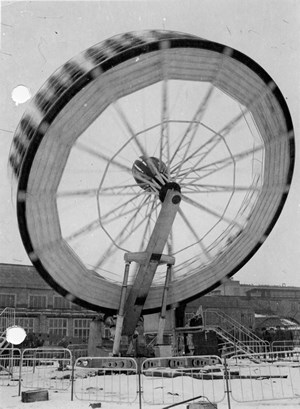
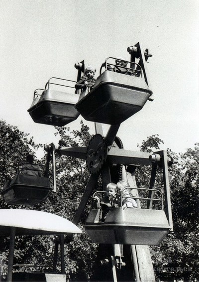
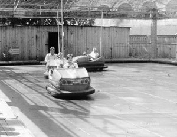

С чего все начиналось
По решению Архангельского горисполкома от 27 июня 1971 года для строительства нового детского парка городскому управлению коммунального хозяйства был отведен земельный участок площадью 1,45 га.
По первому проекту предполагалось просто поставить в парке несколько небольших аттракционов, сделать песочницы и посадить зелень. Но в последствии было решено построить настоящую площадку аттракционов. Строительство парка сопровождалось немалыми трудностями. Строители вручную перерывали сотни кубометров грунта, асфальтировали территорию парка, электрики обеспечивали энергией аттракционы, устанавливали опоры освещения парка.
Строительство парка было закончено 27 июля 1972 года. Парк закупил детские автомобили, велосипеды, безмоторные карусели, детские качели, теннисные столы, ракетки и мячики к ним.
Новый детский парк в г. Архангельске, на углу ул. Энгельса (ныне ул. Воскресенская) и Набережной им. Ленина (ныне Набережная Северной Двины) был открыт 29 июля 1972 года. Официальное открытие парка вылилось в красочную церемонию. За первые два дня работы нового парка около 15 тысяч юных и взрослых архангелогородцев посетили его игровые площадки и аттракционы. Больше всего внимания было приковано к колесу обозрения, с которого далеко просматривалась и Северная Двина, и город. Большим успехом пользовался и кинотеатр «Полет», который размещался в салоне самолета «ЛИ-2». Каждые 30 минут демонстрировался мультфильм «Ну погоди!». А по всему парку были расположены «Русские качели», карусели «Цепочные», и «Фигурные», оригинально оформленный «Ракетоплан», игровое спортивное поле и другие аттракционы. 10 аттракционов могли одновременно принять 300 человек.
С самого открытия парк осуществлял следующие виды деятельности: организовывал занятия кружков, секций и клубов, встречи, слеты, походы, экскурсии, праздники и утренники. Много сил отдавалось кружковой работе, работали спортивные группы.
Название парка менялось не единожды:
— C 1995 по 1996 гг. парк назывался «Центр досуга и развлечений»
— C 1996 по 2000 гг. — Муниципальное образовательное учреждение «Детский парк»
— C 2003 г. — Муниципальное учреждение культуры «Детский парк».